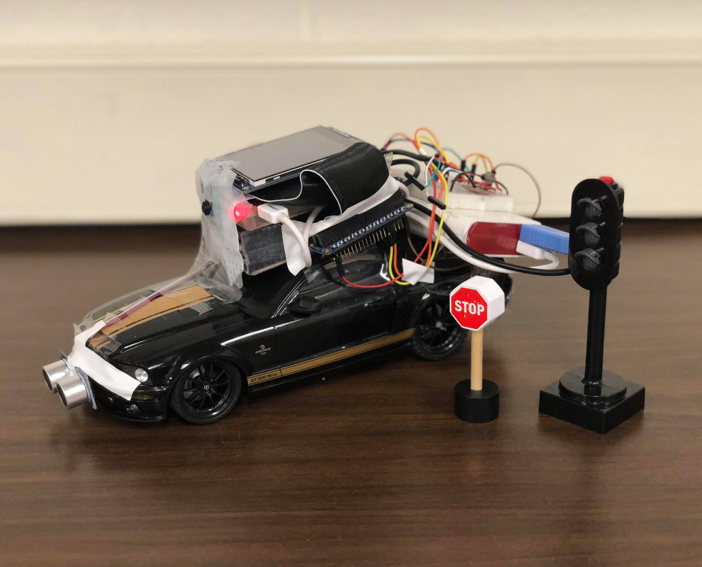

Project Experience
Simulated Autonomous Driving System
ML
CV
Self Driving
Embedded
Python
C
I built a self-driving RC car that could navigate itself in a mocked traffic environment. The car was able to follow the lanes on the road as well as to obey the traffic signs.
This was a class project in the Embedded Operating Systems class. Together with two other teammates, we achieved pseudo-autonomy.
System Overview
The overall system could be broken down into several parts.
- RC Vehicle: The RC car and Raspberry Pi with a camera bundled together. R-Pi is sampling live sensor and camera image data and streaming all the data to the laptop for prediction.
- Computing Server: Our laptop that's running all the ML models and deciding what to do next. We trained an ANN model for detecting the road condition (curvature). We combined the road condition data andn object detection results from OpenCV and wrote a decision-making module to guide the RC car through the traffic.
- Radio Transmitter: An Arduino-powered RC transmitter that sends driving commands to the car.
Models
We broke down our decision-making mechanism into two parts.
We built the Road Condition Classifier to figure out where is the road curving towards (left or right). In order to do so we feed in images of road (mocked with toilet paper) that are either straight, curving left or right. We trained an ANN to figure out the direction. Here are a few of the training images.
Then we look for traffic signs (stop signs and traffic lights) using OpenCV's Object Detection. Finally we combine the results from both algorithms and interpolate the direction the car should move towards.
Handwriting Recognition System
ML
CV
TensorFlow
Python
C++
- Implemented Brute-Force K-Nearest Neighbors method along K-D tree in C++ from scratch. Designed the underlying data structure for storing digit images and getting processed by the model.
- Achieved 94% on MNIST dataset using bare-metal K-Nearest Neighbors method. Further pushed the accuracy to 97.3% by switching to more sophisticated CNN models in TensorFlow.
- Sustained the accuracy to around 97% when introducing noise and distortion to the test data by fine tuning the CNN model parameters.
Tree Ring Counter
CV
Python
- Created an image filter that processes images of tree rings. Designed an algorithm that counts and estimates the age of the tree using the preprocessed tree ring images using OpenCV.
Industry Experience
Software Engineering Internship @ Cadence
Last summer I had my first internship in the Bay Area. I worked at Cadence which makes tools for chip-designers to design VLSI or ASIC chips. Their tools provide insight into what's happening in the silicon as well as generate useful simulation/analysis before actually manufacturing the chip.
During my internship, I worked on the following items.
- Worked on memory improvements of the current Tempus Timing Analysis Tool.
- Designed a Timing data classifier with Python. Further converted the classifier into C++ for performance.
- Compressed output timing data into smaller format for in-memory storage optimization.
- Wrote bash scripts to post-process testing data and generate analytical graphs.
After the internship, I realized that it's a completely different world from other software companies building fullstack applications for end users. It's a world that things move slowly and every design decision needs a solid reason. A lot of our current take-for-granted technologies couldn't exist without the entire chip-design / EDA industry. It's the backbone of our digital world.